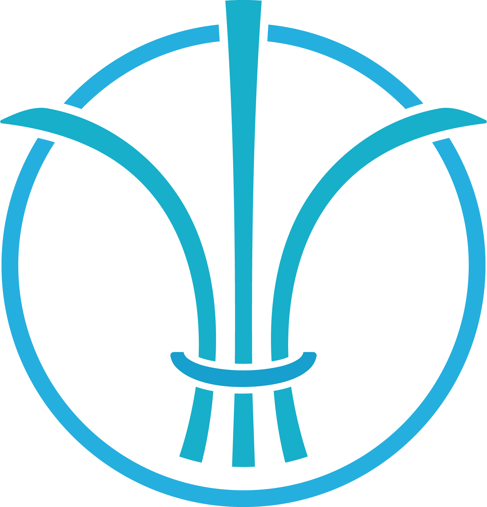

整理する
複雑な状況を整理し、論点・課題・リスクを明確にする。

TTA MANAGEMENTIT CONSULTANT / PROJECT MANAGER / PMO
複雑なプロジェクトを、前へ。
大規模・複雑なITプロジェクトに入り、現場から経営層までをつなぎながら、プロジェクトを前進させます。
ABOUT
SIer 14年、ITコンサルティング10年。金融・カード領域を中心に、大規模システム開発・再構築、PM / PMO、品質・テスト推進、顧客・経営層との折衝、チーム組成・育成まで経験しています。
VALUE
複雑な状況を整理し、論点・課題・リスクを明確にする。
顧客・現場・ベンダー・経営層をつなぎ、認識を揃える。
人を巻き込み、停滞したプロジェクトを前へ進める。
チームを立ち上げ、メンバーを育成し、組織として成果を出す。
FEATURED CASE
2名体制からスタートし、約3か月で成果を創出。クライアント部長・役員への説明、予算化、メンバー育成を経て、20名超のマルチベンダー体制へ拡大。
重要処理バッチが完了しない危険な状態から、再構築プロジェクトを進められる安定稼働状態まで改善。年間約150本の性能改善を推進しました。
OTHER CASES
総合テストリーダーPMO
PM
PM
PROJECTS / SKILLS
大規模システム開発 / システム再構築 / 基幹システム刷新 / PM / PMO / 複数ベンダー管理
プロジェクト立て直し / 複雑化した案件の整理 / 課題・リスク管理 / 品質改善 / 遅延・停滞案件の推進
クレジットカード / 金融システム / 基幹系システム / 大規模トランザクション系
PROJECT STORY
AI × PM
AIを単なる業務効率化ツールとしてではなく、情報整理、調査、資料作成、論点整理など、プロジェクトマネジメントを支える道具として活用しています。
PROFILE
IT Consultant / Project Manager / PMO
IT業界 24年
SIer 14年
ITコンサルティング 10年
要件定義 / プロジェクト計画 / PM・PMO / 品質管理 / テスト推進 / ベンダーマネジメント / 顧客折衝 / 経営層への報告 / チーム組成 / メンバー育成
CONTACT
お問い合わせは、以下の連絡先までお願いします。
CONTACT